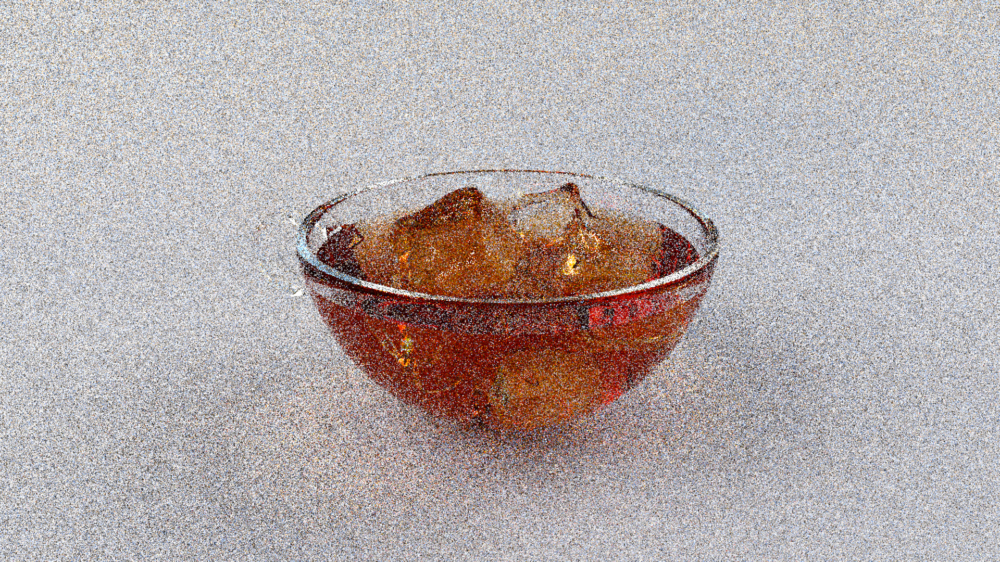
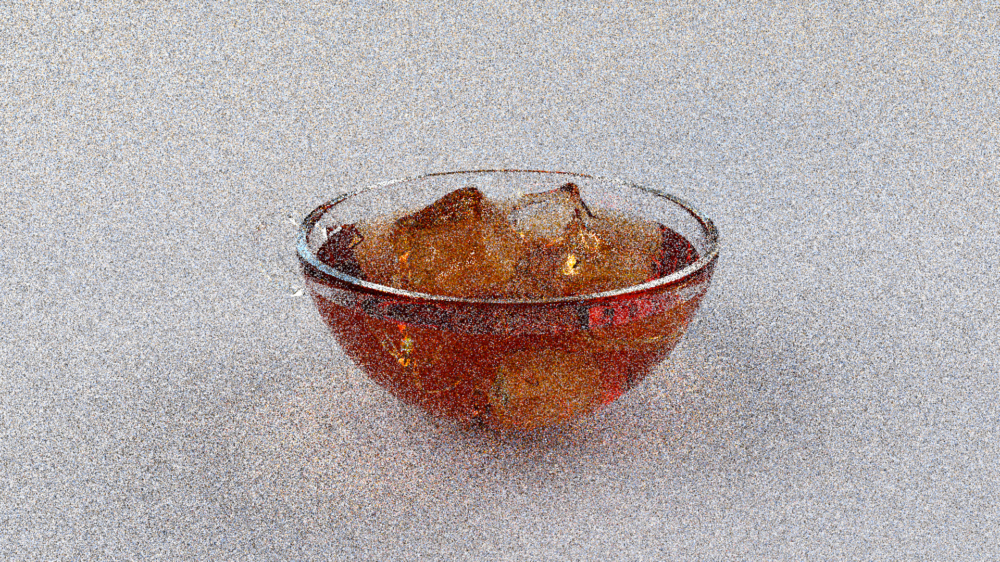

keyboard_return
Figure 2: A single-spp render demonstrating noise pattern differences between x86-64 (left) vs arm64 (right). Differences are most noticeable on rim of the cup, especially on the left near the handle.